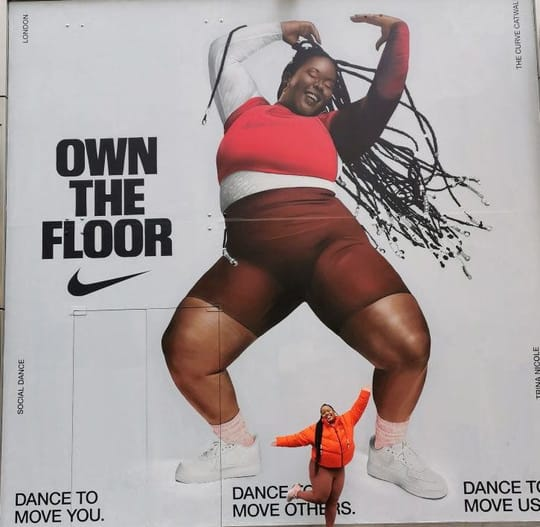
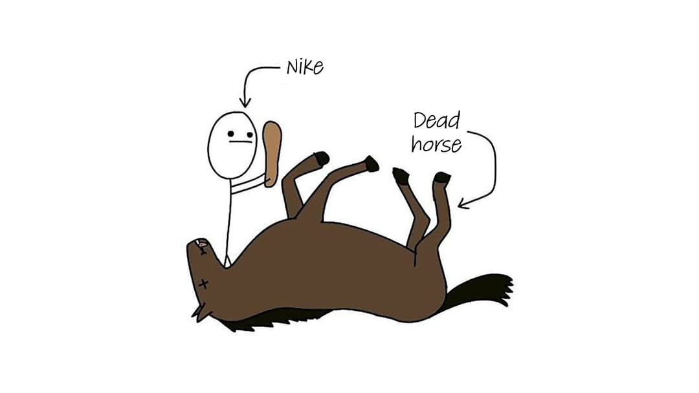

Nike, one of the most iconic brands ever built, has spent four consecutive years destroying shareholder value, and a significant part of that destruction can be traced directly to choices that designers, creative directors, and brand strategists will recognize immediately.
Nike’s stock hit an all-time closing high of $167.25 on November 5, 2021, with an intraday peak of $179.10. As of April 2026, it sits at approximately $43, a collapse of roughly 76% from its peak. The market cap has fallen from $281 billion to under $100 billion. Year over year, the stock has bled: down 29.8% in 2022, 7.2% in 2023, 30.3% in 2024, and down again into 2025. Its shares are now hovering near levels last seen in 2014.
This is not entirely a story about the economy. At its core, it is a story about what happens when you strip the soul out of a brand and how that decision compounds every other headwind a company faces.
Before the Fall: What Made Nike, Nike
Nike was never just a shoe company. Nike was a feeling company.
The 1997 “Failure” ad featuring Michael Jordan is the clearest evidence of what Nike once was. With five NBA Championship rings and a sixth on the way, one of the most recognized athletes on earth said:
I’ve missed more than 9,000 shots in my career. I’ve lost almost 300 games. 26 times, I’ve been trusted to take the game-winning shot and missed. I’ve failed over and over and over again in my life. And that is why I succeed.
No product shot. No price point. No promotion. A man at the peak of his legend and superstardom, admitting failure.
That is what made Nike great. Not the Air Max cushioning system, not the Flyknit technology, not the direct-to-consumer strategy; it was the emotional contract Nike built with its consumers. It was the implicit promise that sport was a metaphor for life, and that their products were the equipment for your aspirations. At that point, Nike didn’t sell shoes. They sold the belief that you were the protagonist of your own story, and the Swoosh was just there, quietly, as your companion.
From campaigns like Just Do It, Revolution, and Write the Future, they didn’t sell a product. They sold aspiration, vulnerability, and excellence. They made you feel something first, and the shoe was the artifact of that feeling.
The Architecture of Collapse
Everything that follows is about what happens when a company forgets what it stands for.
1. Defunding the Creative Engine
In 2019, Nike brought in John Donahoe, a former eBay CEO and ServiceNow board member, to lead the company. Donahoe was not a brand person. He was a technology and operations person, a consultant’s consultant. When performance softened, his instinct was textbook: cut costs, simplify the portfolio, push direct-to-consumer, and let data drive decisions.
What followed was a systematic dismantling. Layoffs swept through brand, engineering, innovation, recruitment, and sourcing teams. In December 2023, Nike announced a $2 billion cost-cutting plan over three years with a 2% workforce reduction. Senior creative leaders began leaving in waves. The people who understood why Nike’s advertising worked, the ones who knew the difference between a product ad and a brand ad, were quietly shown the door.
Among the most significant departures: Wieden+Kennedy, Nike’s agency of record for four decades and the firm that created “Just Do It,” lost the bulk of its Nike engagement as budget shifted toward performance-marketing channels and internal production. The agency that had built Nike’s creative mythology was deprioritized precisely as that mythology most needed defending.
Nike’s marketing became transactional. It lost the epic quality. It stopped making culture and started chasing it.


The 2018 Dream Crazy campaign, built around Colin Kaepernick by Wieden+Kennedy, was set against the backdrop of his blackballing by the NFL for his stance on racial injustice. The copy meant something. It made you feel something. It made you believe in something.
Compare that to Nike’s 2021 output: inclusion marketing without emotional payoff, no athletic-aspiration narrative, no story. No meaning. No feeling. No belief. Three broad deviations from everything the brand had stood for.
2. Overflogging Legacy: The Death of Scarcity
Over the better part of a decade, Nike did something deeply destructive to its most valuable assets: it flooded the market with them.
The Air Force 1, designed by Bruce Kilgore in 1982, was the first basketball shoe built around air cushioning. It became a street icon. It was released in hundreds of colorways and in massive quantities, ending up on sale racks at Foot Locker and Foot Locker outlet stores. The same happened to the Dunk and the Air Jordan 1.
During the pandemic, the strategy appeared to work brilliantly. The Last Dance documentary reignited Air Jordan mania. “Panda” Dunks sold out instantly. Every restock was a cultural event. Nike was “practically printing money,” as Sneaker Freaker described it.
But the company misread what was happening. They confused demand amplification by cultural context (a Netflix documentary, COVID-era nostalgia) with permanent structural demand. So, they produced more. And more. Until the very sneakers that people had queued at 4 a.m. to buy were sitting 30% off in outlet stores.

Desirability requires scarcity or freshness and, in some cases, usually both. When you flood the market with anything, be it a print, a typeface, a logo, or a sneaker, you train the eye to ignore it. It becomes wallpaper. The Air Jordan 1 went from a statement piece to background noise.
Nike’s CFO, Matthew Friend, eventually acknowledged this on a corporate earnings call in March 2024, announcing that the company would pull back production of the Air Force 1 because “many once-coveted icons are increasingly finding their way to sales racks.” He used the word “oversaturation” on a corporate earnings call. That is how bad it got.
The design lesson is ancient: exclusivity is not arrogance, it is brand architecture. Supreme understands this. Hermès has built an entire mythology around it. Even Apple manages it: they discontinue old models specifically so the new one can feel new.
Nike forgot this completely and paid for it in both revenue and cultural capital.
3. The Direct-to-Consumer Gamble That Burned the Wholesale Bridge
In 2017, under CEO Mark Parker, Nike launched its Consumer Direct Offense: cut wholesale intermediaries, own the customer relationship, capture higher margins, build a richer data ecosystem. Under Donahoe, this became the Consumer Direct Acceleration: more aggressive, more committed.
As a result, Nike dropped major wholesale accounts. DSW, Urban Outfitters, Macy’s, Dillard’s, Big 5 Sporting Goods, Zappos: gone. The logic was sound on paper. In practice, it was catastrophic.
Those wholesale floors were discovery environments. They were where the casual consumer encountered Nike. Not the sneakerhead, not the Jordan collector, but the person who just needed running shoes and walked into a sporting goods store. By clearing those floors, Nike didn’t just eliminate retail. It gave competitors like Adidas, Hoka, ON, New Balance, and ASICS the real estate and the credibility that comes with physical presence.
Nike’s direct-to-consumer digital channel, meanwhile, became overly promotional and aggressively discounted, eroding the premium perception that the entire strategy was supposed to protect. They lost margin and brand equity at the same time.
By 2022, Nike was quietly walking it back, sending inventory back to Macy’s and Foot Locker, an admission that the strategy had failed. By 2024, the reversal was explicit.
A class action lawsuit filed in June 2024 alleged that Nike executives had misled investors about the success of the direct-to-consumer strategy. Regardless of the legal outcome, the business damage was real: Nike’s digital revenue fell by 20% in fiscal 2025, its direct business fell by 13%, and wholesale, the channel they had tried to kill, was the only one showing signs of stabilization.
The Cultural Market Share Loss
While Nike was making these strategic missteps, the sportswear world did not wait for Nike to find itself.
Macro conditions such as post-pandemic inventory normalization, softening discretionary spending, and a strong dollar weighed on the sportswear category as a whole. Adidas, New Balance, and other industry players faced the same headwinds. However, their trajectories went in opposite directions, which suggests the macro wasn’t the deciding factor.
One additional variable is worth acknowledging: Greater China, which accounts for roughly 15% of Nike’s total revenue, was simultaneously disrupted by COVID lockdowns, geopolitical friction, and a rising consumer preference for domestic brands like Anta and Li-Ning. Competitors with lighter exposure to China faced proportionally less pressure on that front. This does not change the story told above; the brand missteps were real and costly regardless, but it means those missteps landed on already-weakened ground, which made the financial impact more severe than the creative failures alone would have produced.
Adidas leaned hard into the Samba and Gazelle, and put them back into cultural circulation with clean, unhurried storytelling. Their stock rose over 80% between 2023 and 2024 under Björn Gulden, a recovery built on revenue discipline and product coherence rather than promotional volume. Multiple industry analysts, including GlobalData and Euromonitor, documented Adidas gaining apparel market share through 2024 and 2025 while Nike’s declined, a directional shift that held across varying market definitions.
New Balance partnered with Joe Freshgoods and Aimé Leon Dore to deliver the 550 and the 1906R, tapping into a “quiet cool” aesthetic that felt at odds with Nike’s loudness. They let the product speak and let scarcity do its work.
Hoka and ON won the running category, the original core of Nike’s identity, by investing in genuine performance innovation and storytelling that made runners feel seen. Nike, meanwhile, had pulled back R&D investment and let its running heritage drift.
ASICS, with the Gel-Kayano 14, became a cultural object for a generation discovering Y2K fashion. Nike had nothing to compete with that energy because they were too busy restocking Air Force 1s.
Nike used to drive culture. By 2023, it was reacting to it.
The Design-Finance Connection
Nike’s gross margin decreased by 440 basis points in the fourth quarter of fiscal 2025, the sharpest single-quarter compression in recent history, meaning that for every dollar of revenue, they kept significantly less. This happened for a specific reason: discounting.
When your products are no longer desirable at full price, you discount. When you discount a luxury or premium brand, you teach the consumer that the real price is the sale price. You train them to wait. You erode the very premium you spent decades building.
This is a design failure dressed in financial language. Brand premium is sustained by desirability, and desirability is sustained by creative output: product innovation, emotional advertising, cultural relevance, and scarcity management. Nike degraded all four simultaneously.
Total revenues for fiscal 2025 came in at $46.3 billion, down 10% year on year. Net income was down significantly. Since its peak, the stock has destroyed roughly $180 billion in market value.
Compare this with the financial profile of brands that have maintained their creative integrity: LVMH, despite macro headwinds, has maintained pricing power by refusing to discount. Apple maintained premium pricing on iPhones by keeping design innovation a non-negotiable. ON’s revenue grew because it invested heavily in product R&D, while Nike was cutting back.
Cut the creative infrastructure, and you don’t just lose culture; you lose margin.
The Turnaround
Nike recognized the problem eventually. Nike’s current CEO, Elliott Hill, who replaced Donahoe, was appointed in October 2024. His appointment was an explicit course correction; he was a 32-year Nike veteran who rose from within and understood what the brand actually stood for.
He said it plainly in one of his first public statements: “We lost our obsession with sport.” Not revenues. Not margins. Sport. The thing that gave everything else meaning.
His “Win Now” strategy is, at its core, a creative strategy: return the athlete to the center of brand storytelling, reinvest in wholesale relationships to rebuild physical discovery, pull back retro overproduction to restore desirability, accelerate genuine product innovation (new Liquid Air Max, Nike Mind headgear, Aero-FIT, Therma-FIT platforms) and pour $5 billion into brand marketing in 2026, shifting from promotional discounting back to epic, sport-led narratives.
In Hill’s own words to Fox Business: “I keep talking about sports, sports, sports, because that’s what authenticates our brand.”
Nike Running was up over 20% by fiscal Q3 2025. Wholesale in North America grew 11%. The Nike Mind headgear sold out globally. However, these are early signs, not a confirmed recovery.
The recovery, if it comes, will not be from a data strategy or a distribution tweak. It will be from Nike rediscovering what feeling feels like.
What You Can Take From This
The through-line in Nike’s decline is not a technology failure, a distribution error, or a market cycle. It is a failure of institutional belief: specifically, the belief that emotional advertising, cultural relevance, and scarcity management are costs to be optimized rather than assets to be compounded.
Nike’s decline is a $180 billion demonstration of what happens when finance logic is applied to a brand that runs on feeling. The company cut what it could measure least (creative quality, cultural credibility, product desirability) and optimized for what it could measure most: margin, digital conversion, wholesale reduction. The efficiency gains were real and temporary. The brand equity losses were structural and lasting.
Brand premium is a financial asset. It accrues through sustained creative investment over years and depletes through neglect in months. Once consumers learn to wait for a sale, you have taught them the real price. Once they stop associating a product with aspiration, no discount can recover that association.
Nike had the greatest emotional advertising engine in the world, the campaigns that made you want to lace up, made you feel like you were the athlete, and they dismantled it in pursuit of short-term margin. Multiple headwinds accelerated and deepened the damage. But the vulnerability was self-created.
Nike is attempting to rebuild. The early signals are encouraging. But four years of creative underinvestment, channel mismanagement, and product oversaturation cannot be reversed in a quarter.
The Swoosh will survive. Whether it returns to the cultural weight it once carried is a creative question dressed in financial language, and the answer depends entirely on whether the people making the decisions understand the difference.